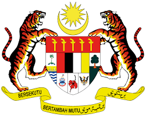
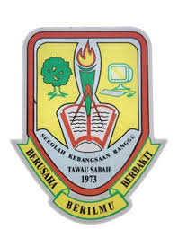

Jadual Sukan Tara (13–16 Okt) telah diterbitkan! Lihat Jadual & Putaran Sukan Tara di sini →
Hari / TarikhMasaAcaraKategoriTempatStatus


SK RANGGU • ATUR CARAJadual kejohanan tiga hariTarikh, hari dan masa hanya dipaparkan selepas jadual rasmi dilengkapkan melalui AppSheet.